Perfil PVC
Tecnologia, Inovação e Profissionalismo em um só lugar
Benefícios das Portas e Janelas de PVC
Energia
A baixa condutividade térmica do PVC somada aos vidros isolantes e adequada instalação, reduzem o gasto com climatização (fria ou quente) de uma residência em até 65% comparado com as janelas tradicionais de madeira ou alumínio.
Acústica
Os altos níveis de isolamento acústico das janelas fabricadas com os perfis de PVC diminuem significativamente o ruído ambiental, podendo chegar a reduzir até 45DB (Decibeis).
Segurança
O PCV por natureza é muito mais duro e, graças a modificações realizadas na sua estrutura molecular exclusivamente pelos profissionais da Kömmerling, fazendo assim com que nossos produtos ganhem maior resistência a impactos. Essa qualidade toda é garantida por inúmeros testes laboratoriais.
Resistência
O PVC possui altíssima resistência química contra corrosão, a ácidos e agentes alcalinos, gases e à salinidade.
Vida Útil
Há mais de 40 anos a Kömmerling iniciou a fabricação em série de perfis de PVC. Ainda hoje existem janelas fabricadas e instaladas naquela época, e, em perfeito estado. Sua vida útil está estimada entre 40 e 50 anos.
Modelos de Portas de PVC
| Portas de PVC | Imagem | Descrição |
|---|---|---|
| Oscilobatente |  |
Ideal para ventilação controlada, abre para dentro e inclina para cima. |
| Praticável |  |
Abertura convencional de giro lateral. Clássica e eficiente. |
| Deslizante | 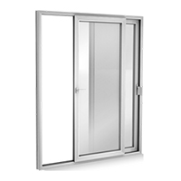 |
Porta de correr, ideal para espaços pequenos e modernos. |
| Elevadora | 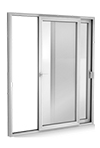 |
Modelo sofisticado com abertura vertical. Excelente vedação. |
| Camarão | 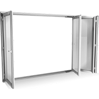 |
Composta por folhas articuladas, ideal para amplas aberturas. |
| Paralela | 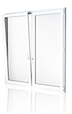 |
Abre deslizando paralelamente, otimizando o espaço interno. |
| Pivotante | 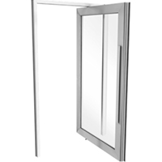 |
Design elegante com eixo central de rotação. Ideal para entradas sofisticadas. |
Modelos de Janelas de PVC
| Janelas de PVC | Imagem | Descrição |
|---|---|---|
| Oscilobatente | 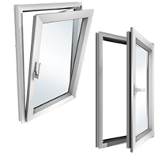 |
Ideal para ventilação controlada, abre para dentro e inclina para cima. |
| Maxim-ar | 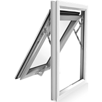 |
Abertura convencional de giro lateral. Clássica e eficiente. |
| Abatível | 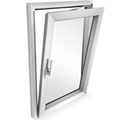 |
Porta de correr, ideal para espaços pequenos e modernos. |
| Praticável | 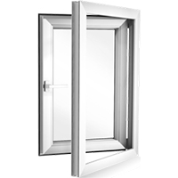 |
Modelo sofisticado com abertura vertical. Excelente vedação. |
| Corredeira | 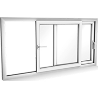 |
Composta por folhas articuladas, ideal para amplas aberturas. |
| Fixo | 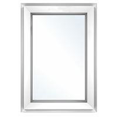 |
Abre deslizando paralelamente, otimizando o espaço interno. |